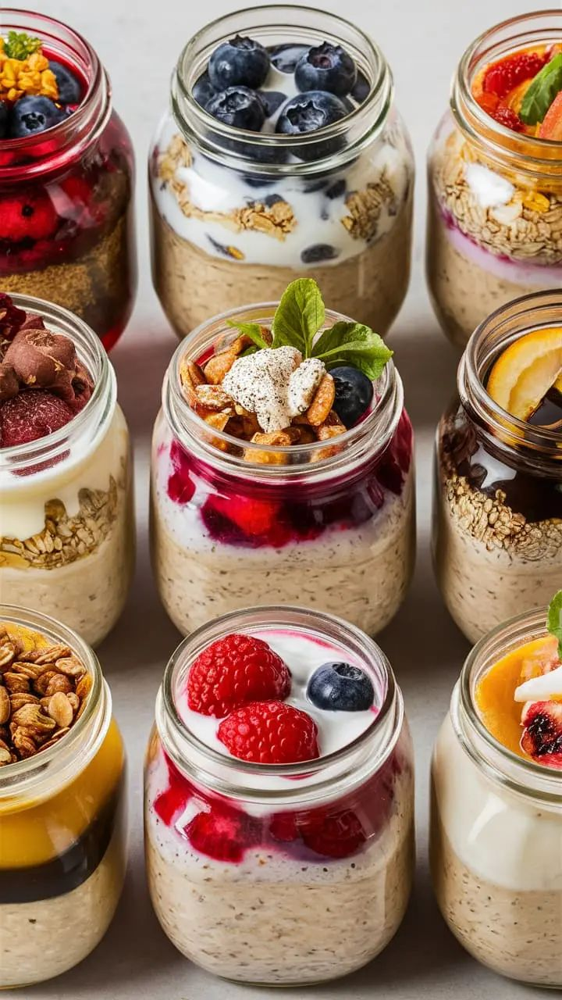

Overnight Oats

Servings: 4
Time Taken: 20 minutes
Ingredients:
- 1/2 cup Oats
- 1/2 cup Milk
- 2 tablespoon Yogurt
- 1/2 tablespoon Chia Seeds
Method:
- In a glass jar with a lid put Oats, Milk and Chia Seeds.
- On top put Yogurt.
- Add cut up bit - sized Strawberries and Banana or any other fruit you want.
- You can drizzle some Honey on top.